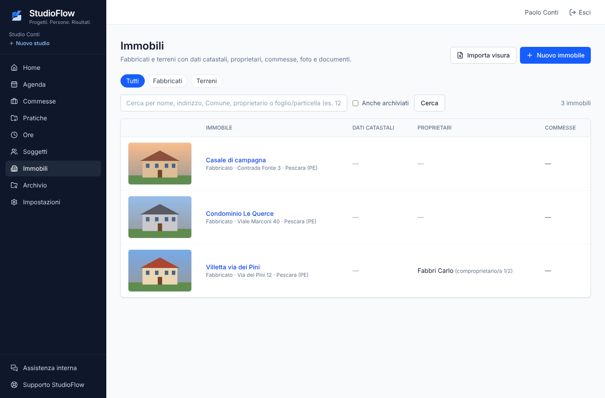
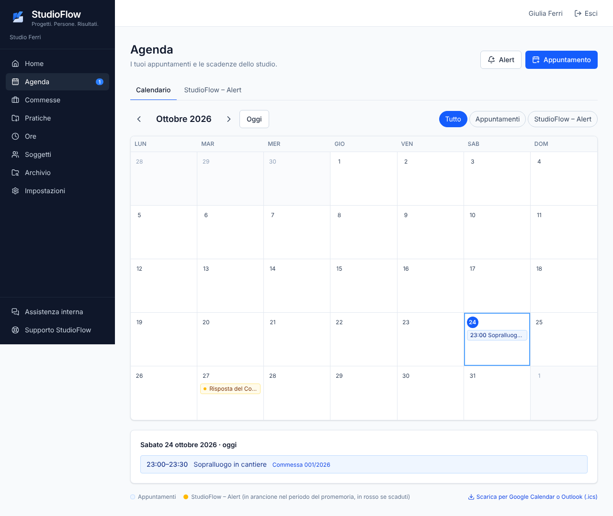

Soggetti, commesse, pratiche, immobili con il catasto, archivio fotografico e agenda in un solo posto. Installato sul server dello studio: i dati restano tuoi.

Pensato con chi lavora ogni giorno tra Comuni, catasto e cantieri. Semplice da usare, anche da telefono.
Clienti, imprese, professionisti ed enti con documenti in scadenza, privacy e legali rappresentanti. Import da Excel, PDF e dal vecchio gestionale.
Numerazione per anno, pratiche che raccolgono più commesse, soggetti coinvolti con il loro ruolo, ore e costi di ogni lavoro.
Mappa con cartografia catastale dell'Agenzia delle Entrate, visure, proprietari nel tempo, foto e ricognizione delle facciate.
Ritrova in un attimo foto e documenti delle cartelle dell'ufficio, collegati ai clienti, senza spostare un file.
Appuntamenti dello studio e il calendario StudioFlow – Alert per risposte degli enti, assicurazioni, pagamenti e scadenze.
Collega i tuoi account Google: appuntamenti sincronizzati in due direzioni e lo spazio di Drive a portata di commessa.
Basta email con gli allegati, chiavette e dati ricopiati a mano. Geometra, architetto, ingegnere e impresa sulla stessa commessa, ognuno con il proprio StudioFlow: si condivide solo quello che scegli, quando vuoi, e lo togli con un clic.
StudioFlow non è un portale online: si installa sul server dello studio e i colleghi entrano dalla rete interna, anche da telefono.

Stiamo cercando pochi studi tecnici che vogliano usare StudioFlow ogni giorno e aiutarci a migliorarlo.
Contatti in arrivo: a breve trovi qui l'indirizzo per partecipare.